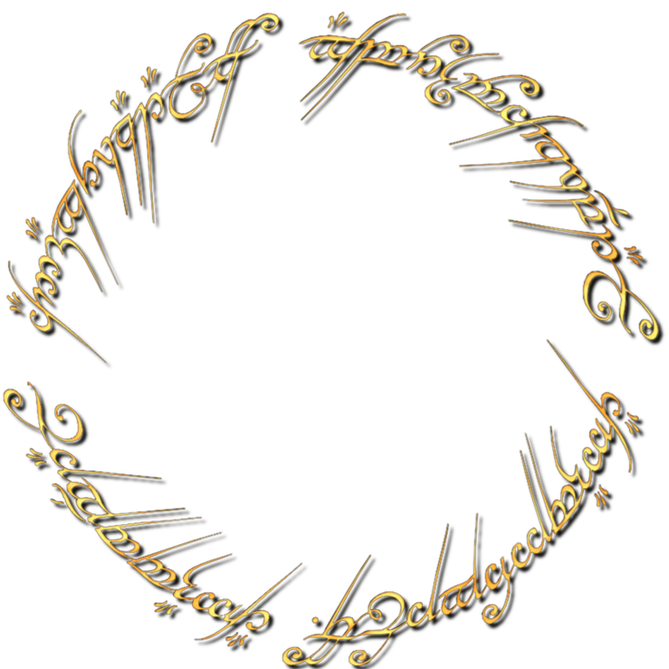
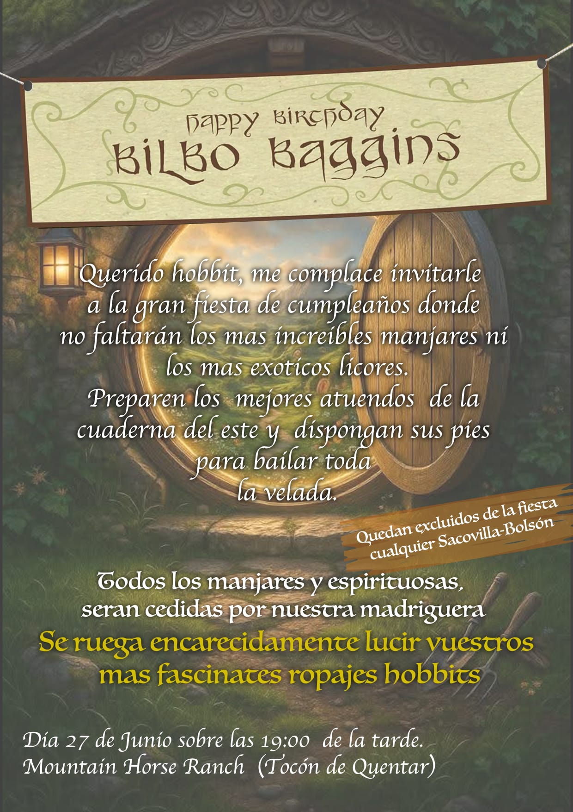
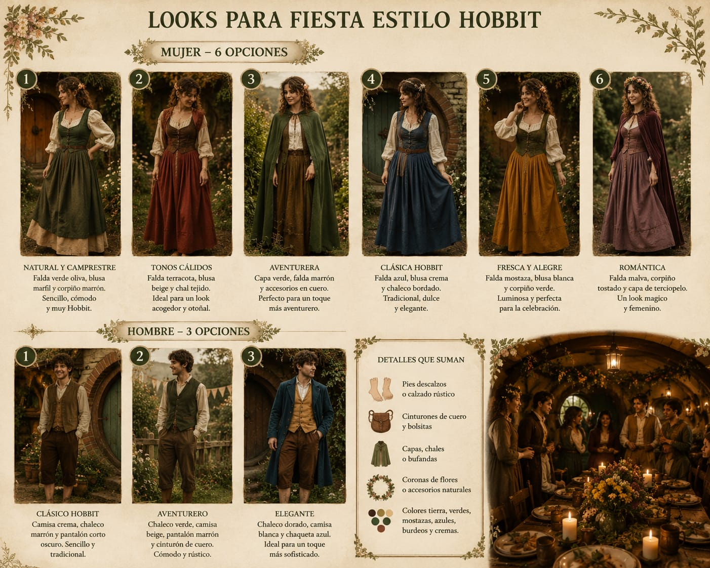
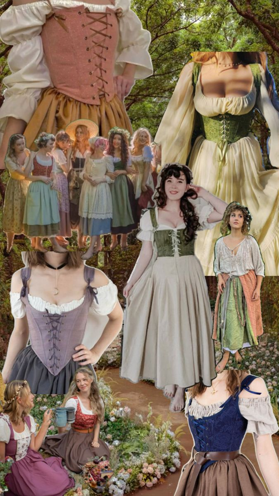
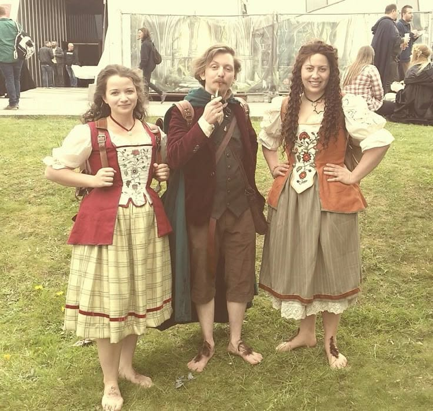
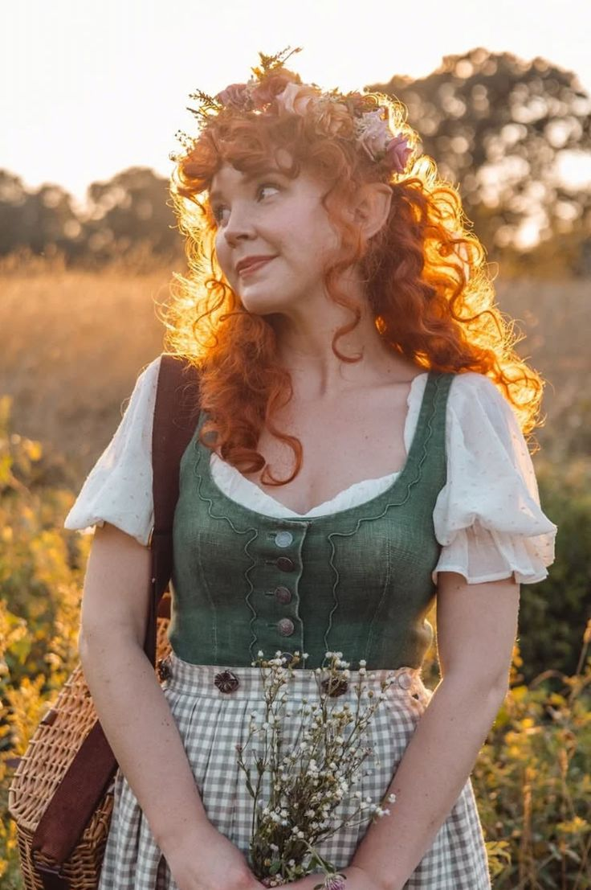
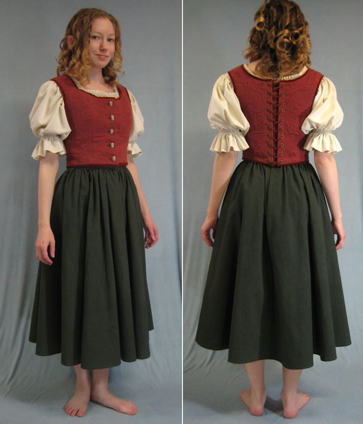
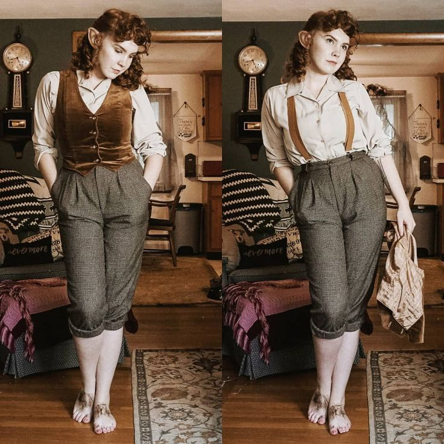
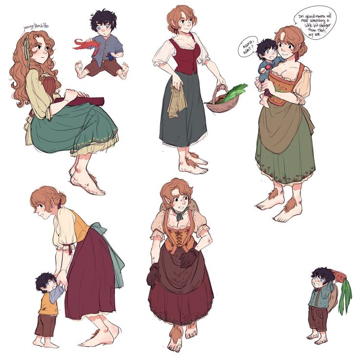
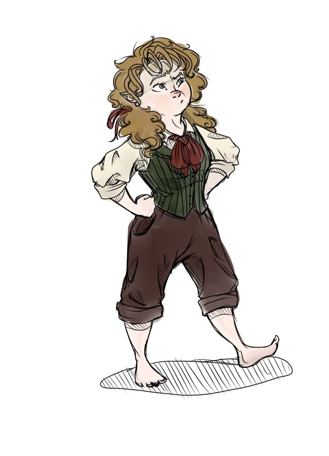

La Comarca os convoca
27 de Junio · 19:00h
Quedamos en Quéntar · Granada
Leer la invitaciónSi estás leyendo esto es porque me he marchado por un tiempo con los elfos, pero volveré para celebrar una increíble fiesta de cumpleaños a la cual estás invitado.
Si estás aquí es porque realmente aprecio muchísimo tu presencia y me encantaría que estuvieras a mi lado el día que cumplo 111 años, aunque parezca que tengo 40.
— Joso «Pies Peludos» Tuk, el Cumpleañero de la Comarca
P.D.: El pequeño Tristán, guardián de los caballos del rancho y señor custodio de la Comarca, también os espera con los brazos abiertos.

para la fiesta más inesperada de la Comarca
Quedamos en Quéntar y vamos juntos al rancho. Llegamos con la luz del atardecer para no sufrir el calor. Juegos, pasatiempos y el sol tiñendo el horizonte.
Una cena al más puro estilo hobbit: un banquete digno de dioses alrededor de la hoguera campestre.
Los violines y las flautas no pararán de sonar. Bailaremos mientras degustamos los más ricos licores de la Cuaderna del Este.
Todo esto bajo un increíble cielo estrellado. Hoguera, fotos en el rincón ambientado y recuerdos para siempre junto a Joso y el pequeño Tristán.
Quedamos en Quéntar y vamos juntos al rancho.
~50 min desde Granada capital
Tocón de Quéntar · Granada. Caballos, vacas, gallinas y naturaleza salvaje. El sitio idóneo para mover tus pies peludos.
Toda la comida y bebida corre por cuenta de La Casa del Zorro Bajo el Roble. Solo traes tus ganas.
Es muy facilito. Aquí tenéis la guía completa y ejemplos reales.








Confirma tu asistencia o comenta si tienes algún problema. No te cortes, estamos para ello.
Los que no puedan venir que lo comuniquen. ¡Sin drama, pero que se salga!